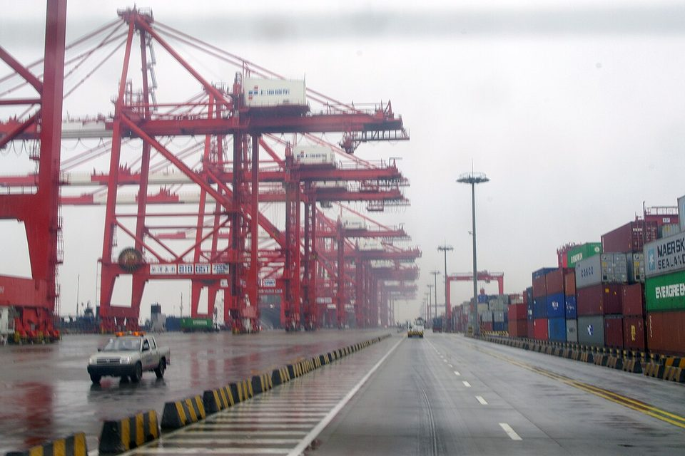
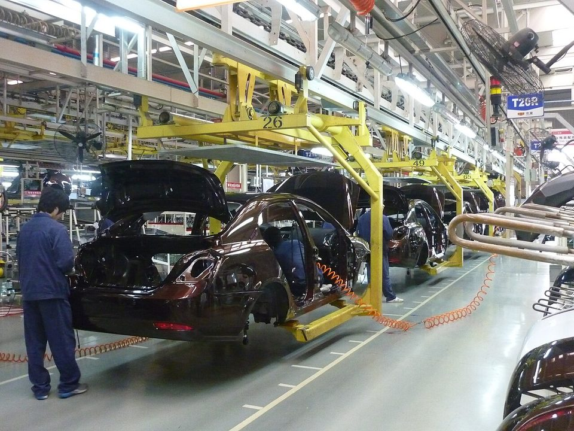
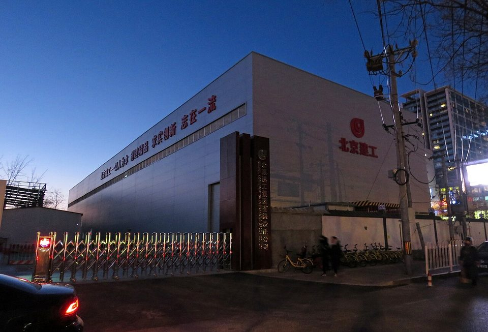

DOWNSTREAM DEMAND · CHINA PMI · 2026.09
中國 9 月 PMI：重回擴張，但靠生產與漲價撐起，鋼鐵業仍在收縮
鋼鐵潮流工作室 · 發布 2026.10.06

本期重點
中國國家統計局 9 月 30 日公布，9 月製造業 PMI 50.1%、非製造業商務活動指數 50.2%、綜合 PMI 產出指數 50.7%，三項指數同步回到 50 的榮枯線以上。但細看分項，回升主要來自生產加快與原材料漲價，新訂單走平、在手訂單續減；鋼鐵所屬的黑色金屬冶煉及壓延加工業，生產與新訂單仍低於臨界點。
- 製造業：PMI 由 49.8% 升至 50.1%。生產指數 51.7%、升 1.3 個百分點，新訂單 50.5%、微降 0.1 個百分點。
- 價格：原材料購進價格指數 60.8%、大升 4.2 個百分點，出廠價格指數 54.0%、升 3.6 個百分點，成本端漲勢明顯。
- 產業分化：高技術製造業 52.5%、裝備製造業 51.0%，高耗能行業僅 48.0%。
- 非製造業：建築業商務活動指數由 46.9% 跳升到 50.3%，但非製造業新訂單 46.5%、在手訂單 43.8%，仍在收縮區間。
關鍵數字
製造業：生產跑在訂單前面
製造業分項指數（9 月，以 50 為中線）
橘色高於 50 表示擴張，藍色低於 50 表示收縮；右側小字為 8 月數值。資料來源：國家統計局。
9 月製造業 PMI 回升到 50.1%，主要由生產指數帶動：生產 51.7%、比 8 月升 1.3 個百分點，採購量 51.0% 也同步上升。需求面卻沒有跟上：新訂單 50.5%、微降 0.1 個百分點，新出口訂單 50.0%、也微降 0.1 個百分點，在手訂單更降到 46.0%。
生產快於訂單，加上產成品庫存降到 47.6%，顯示企業較像是在消化訂單存量、去化庫存，而不是因為新需求湧入而擴產。從業人員指數 48.4%、續降 0.3 個百分點，企業對增聘人力仍保守；生產經營活動預期 53.8% 與 8 月持平。
價格：原材料大漲，出廠價跟進
價格指數（9 月）
原材料購進價格指數 60.8，比 8 月大升 4.2 個百分點。資料來源：國家統計局。
原材料購進價格指數升到 60.8%，是這次 PMI 最突出的變化。統計局說明，主因是「近期國際大宗商品價格上漲、部分行業需求增加」，石油煤炭及其他燃料加工、化學原料及化學製品兩個行業的購進與出廠價格指數，都升到 60% 以上高位。
出廠價格指數同步升到 54.0%，代表部分成本有轉嫁到售價。非製造業的投入品價格 52.5%、銷售價格 50.3% 也雙雙回升。對鋼鐵業而言，市場報導指出 9 月以來煤焦等原料走高，鋼廠虧損擴大，成本壓力先於需求到來。

產業與規模：高技術強、高耗能弱
重點行業與企業規模 PMI（9 月）
重點行業未公布 8 月數值。黑色金屬冶煉及壓延加工屬於高耗能行業。資料來源：國家統計局。
重點行業呈現明顯分化。高技術製造業 52.5%、裝備製造業 51.0%、消費品行業 50.7%，都在擴張區間；高耗能行業只有 48.0%，是四大重點行業中唯一低於 50 的類別。統計局點名，農副食品加工、醫藥等行業的生產與新訂單指數都高於 55%；化學原料及化學製品、黑色金屬冶煉及壓延加工等行業的生產與新訂單指數則「均繼續低於臨界點」。
企業規模方面，大型企業 50.6% 與 8 月持平；中型企業 49.7%、小型企業 48.9%，分別回升 0.3 與 1.0 個百分點，但仍在收縮區間。
非製造業：建築業反彈，新訂單仍弱
非製造業分項指數（9 月）
建築業由 46.9 回升到 50.3，是非製造業回溫的主力；新訂單、在手訂單仍明顯低於 50。資料來源：國家統計局。
非製造業商務活動指數由 49.0% 升到 50.2%，主力是建築業：建築業商務活動指數由 46.9% 跳升到 50.3%。9 月通常是夏季高溫多雨結束、工地恢復施工的時期，回升帶有季節性；建築業業務活動預期指數 55.4%，業者對第四季趕工仍有期待。服務業商務活動指數 50.2%、升 0.9 個百分點，電信、貨幣金融、保險等行業都在 55% 以上，房地產與資本市場服務則仍在低位運行。
但非製造業的新訂單只有 46.5%、在手訂單 43.8%，從業人員 45.9%，都明顯低於 50。建築業的回升主要來自既有工程復工，新開案仍少，這與前 8 月房地產新開工面積年減 24.8% 的格局一致。

對鋼鐵業的意涵
- 成本先漲、需求未到，鋼廠利潤受擠壓。 原材料購進價格指數大升 4.2 個百分點，黑色金屬業的新訂單卻仍在收縮，呼應 9 月中國鋼廠虧損擴大、產量難以放大的情況。
- 建築業復工有利短期長材出貨。 9、10 月工地復工會帶動螺紋鋼、型鋼需求，但新訂單與在手訂單偏低，延續性有限，不宜視為營建用鋼的趨勢轉折。
- 製造業撐住板材。 裝備製造與高技術製造業維持擴張，對汽車、家電、機械用的冷軋、鍍面鋼板與電磁鋼片形成支撐，「板強長弱」格局延續。
- 出廠價格回升有助穩定出口報價。 出廠價格指數升到 54.0%，配合 8 月中國鋼材出口均價年增 3.5%，第四季中國鋼材出口殺價的空間較小，對亞洲鋼價是中性偏正面。
觀察重點
- 10 月中旬公布的 9 月 PPI 與鋼材出口：原料漲價是否傳導到出廠端，出口能否守住每月千萬噸。
- 10 月 20 日前後公布的 9 月工業增加值、固定資產投資與粗鋼產量：PMI 回升是否反映在實際生產。
- 10 月底公布的 10 月 PMI：建築業能否守住 50%，黑色金屬業新訂單能否回到臨界點以上。
- 國際大宗商品價格走勢：原材料購進價格指數能否從 60% 以上高位回落。
延伸閱讀
資料來源
- 2026 年 9 月中國採購經理指數運行情況（國家統計局，2026-09-30）
- 國家統計局服務業調查中心高級統計師霍麗慧解讀 2026 年 9 月中國採購經理指數（國家統計局，2026-09-30）
- 2026 年 1–8 月全國房地產市場基本情況（國家統計局，2026-09-15）
- 「金九」鋼市旺季需求兌現幾何？（騰訊新聞，2026-09-07）
- 中鋼協：8 月鋼材出口 1,015.5 萬噸、年增 6.8%（Webull 轉載）
內容僅供產業資訊參考，不構成投資建議。新聞版權屬原出處所有。